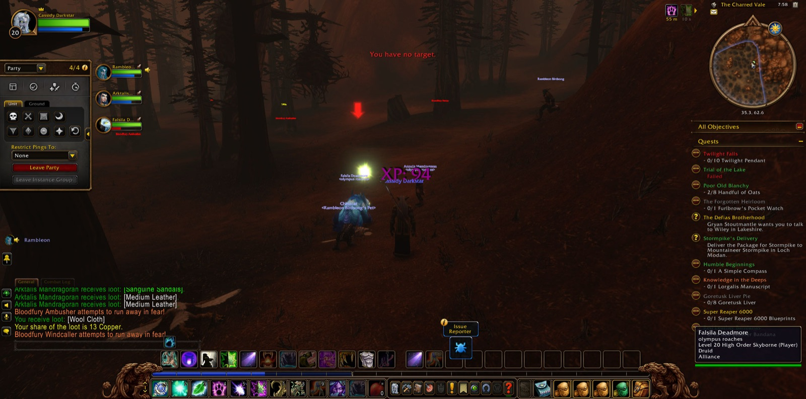
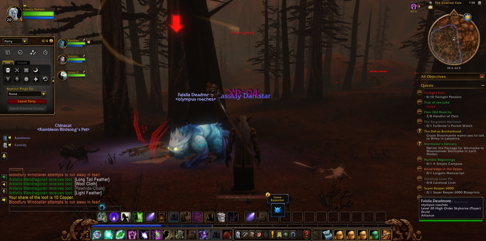
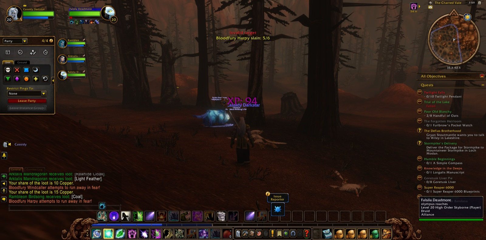
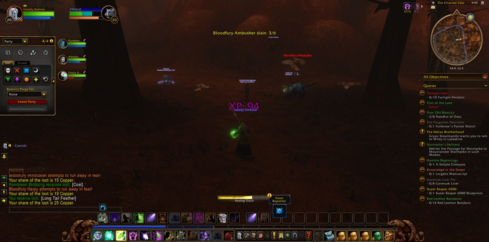

Cassidy Darkstar began in Ironforge, in the hall of the High Seat, and there Rambleon the Hunter joined him. Rambleon stayed at his side through all that followed, a companion for the whole of that road. Together they passed the Great Forge and the Vault of Ironforge, crossed the Mystic Ward and came at last into the Forlorn Cavern. There Cassidy finished the errand called The Powers Below, and so one task was laid down before another was taken up.


From the halls of the dwarves he went to Darnassus, and a picture was taken as he came onto Craftsmen's Terrace. Among the terraces of his own people he accepted a new errand, Twilight Falls. Then he went down to Rut'theran Village and out over the Veiled Sea. The road ran on and did not linger. Mist's Edge, Auberdine, the Long Wash and the Twilight Shore of Darkshore fell behind him, then the Zoram Strand in Ashenvale, and so he came into the Stonetalon Mountains. At their threshold he took up a second errand, Reclaiming the Charred Vale, and went on by Stonetalon Peak toward Mirkfallon Lake.


There the mountains tested him. Once, by Mirkfallon Lake, he fell, and the way back led him by Webwinder Path and Windshear Crag. It was no great matter, and the tale does not dwell on it. What he overcame is more worth the telling. He slew many Blackened Basilisks, and then he went down into the Charred Vale itself, where the Bloodfury Harpies began to fall before him. Rogue Flame Spirits were put down in their turn, and he often stopped to take pictures of that hard country, as though he wished to keep some record of it.


In those mountains two more companions came to him, Arktalis and Falsila, both Druids as he was, and they joined him for the last part of that venture. With them in the Charred Vale he slew Bloodfury Ambushers and Bloodfury Windcallers, a Singed Basilisk, and even a Charred Ancient. The harpies fell until the sixth was counted, and so the fighting that Reclaiming the Charred Vale had asked of him was done, though no one had yet heard the errand's ending. The Vale gave him a hard welcome, but each time he went back into it.


At last Cassidy turned back toward Darnassus. On its terraces he parted from Arktalis and from Falsila, with courtesy to both. Then he passed the Warrior's Terrace and the Tradesmen's Terrace and came into the Cenarion Enclave, with Rambleon still beside him. There the chapter rests, with the errand of the Charred Vale still to be told and Twilight Falls still waiting, both of them lying further down the road.

